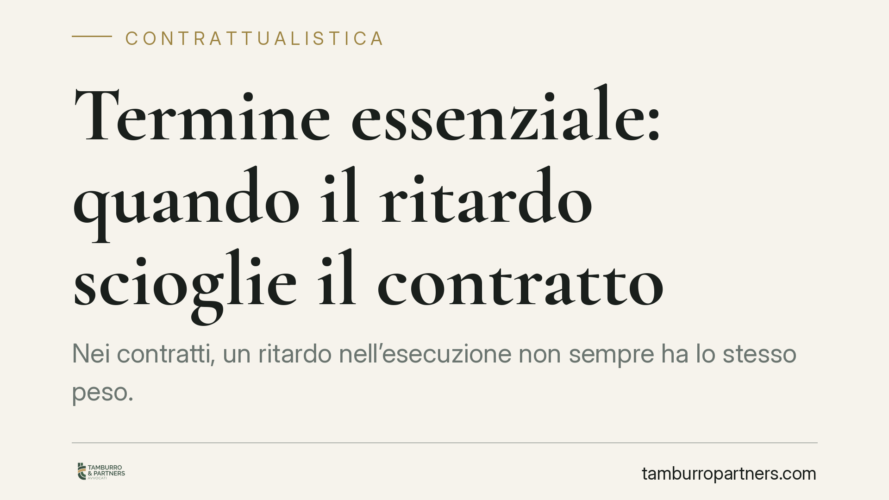

Termine essenziale: quando il ritardo scioglie il contratto
Nei contratti, un ritardo nell'esecuzione non sempre ha lo stesso peso. Quando il termine è "essenziale", il ritardo può sciogliere il contratto in modo pressoché automatico, senza bisogno di ulteriori diffide. Capire quando ricorre questa figura, disciplinata dall'art. 1457 c.c., è decisivo per chi acquista o vende, appalta o si impegna a consegnare entro una data precisa.

Il problema: non tutti i ritardi sono uguali
Un adempimento eseguito in ritardo produce conseguenze diverse a seconda del valore che le parti hanno attribuito al tempo. In molti contratti un lieve ritardo è tollerabile e comporta, al più, il risarcimento del danno. In altri, invece, rispettare la scadenza è la ragione stessa dell'accordo: se il termine salta, la prestazione perde utilità.
È qui che entra in gioco il termine essenziale: quel momento oltre il quale l'esecuzione non serve più al creditore. Pensiamo all'abito da sposa consegnato il giorno dopo il matrimonio, o alla fornitura per un evento fissato in una data precisa.
Inquadramento normativo
La disciplina è contenuta nell'art. 1457 del Codice civile. La norma prevede che, se il termine fissato per la prestazione deve considerarsi essenziale nell'interesse della parte, questa - salvo patto o uso contrario - se vuole comunque esigere l'esecuzione nonostante la scadenza, deve darne avviso all'altra parte entro tre giorni. In mancanza di questo avviso, il contratto si intende risolto di diritto, cioè sciolto automaticamente, anche senza una domanda al giudice.
Il meccanismo è quindi rovesciato rispetto all'ordinaria risoluzione: qui il default è lo scioglimento. Se il creditore tace, il contratto salta; se vuole salvarlo, deve attivarsi entro il breve termine di tre giorni.
L'essenzialità del termine, secondo la Cassazione, può essere oggettiva (la prestazione tardiva è inutile per natura) oppure soggettiva (le parti hanno espressamente qualificato la scadenza come inderogabile). Non basta però l'uso di formule come "tassativo" o "improrogabile": i giudici richiedono una volontà chiara e univoca, desumibile dal testo del contratto e dalle circostanze concrete. In caso di dubbio, il termine si presume non essenziale.
Cosa cambia in concreto
Per chi deve eseguire la prestazione - il debitore - un termine essenziale significa che il margine di recupero è ridottissimo. Scaduta la data, non può contare su una diffida che gli conceda tempo ulteriore: rischia di trovarsi il contratto già sciolto.
Per chi attende la prestazione - il creditore - l'essenzialità è un'arma a doppio taglio. Da un lato lo libera rapidamente da un vincolo divenuto inutile; dall'altro lo obbliga a una scelta veloce. Se, nonostante il ritardo, ha ancora interesse alla prestazione, deve manifestarlo entro tre giorni, altrimenti perde il diritto di pretenderla.
Attenzione a un aspetto spesso trascurato: la risoluzione di diritto non esclude il risarcimento del danno. Lo scioglimento del contratto e il ristoro delle perdite subìte viaggiano su binari distinti.
L'importanza della qualificazione
La vera partita si gioca sulla qualificazione del termine. Molti contenziosi nascono proprio dall'incertezza: era davvero un termine essenziale o solo una scadenza ordinaria? La risposta cambia radicalmente le conseguenze del ritardo.
Per questo la fase di redazione del contratto è cruciale. Un termine che le parti considerano fondamentale va formulato in modo che l'essenzialità emerga senza ambiguità, spiegando anche la ragione dell'inderogabilità (l'evento, la stagionalità, la funzione della prestazione).
Cosa fare in concreto
- Verifica la natura del termine prima di firmare: se la scadenza è per te decisiva, chiarisci nel testo che è essenziale e perché.
- Se sei creditore e il debitore ritarda, decidi subito: se vuoi ancora la prestazione, invia l'avviso entro tre giorni, con mezzo che lasci traccia (PEC o raccomandata).
- Se sei debitore, monitora le scadenze qualificate come essenziali e, in caso di difficoltà, informa tempestivamente la controparte per negoziare una proroga scritta.
- Conserva la documentazione su date, comunicazioni e circostanze: sarà determinante per provare l'essenzialità o, al contrario, per contestarla.
- Fatti assistere nella redazione delle clausole sui termini, evitando formule generiche che non reggono a un vaglio giudiziale.
Il termine essenziale è uno strumento potente ma insidioso: consigliamo di trattarlo con cura sia in fase di stesura del contratto sia quando il ritardo si è già verificato, perché i margini di manovra si esauriscono in fretta.
---
Contributo informativo a cura di Tamburro & Partners - Avv. Giuseppe Tamburro. Non costituisce parere legale.
Ogni contratto ha il suo equilibrio.
Se vuoi una revisione delle clausole o una redazione su misura, scrivi allo studio. Ti rispondiamo entro un giorno lavorativo.